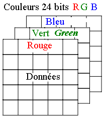
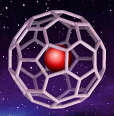
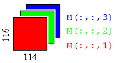
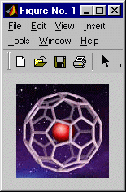

Le processeur balaie la mémoire (typiquement 75 fois par seconde) et affiche les trois tons de couleur (RGB) selon l'information conservée dans un tableau de couleurs que l'on appelle généralement la palette de couleurs.
Matlab offre la possibilité d'utiliser des tableaux 1D ou vecteur, 2D ou matrice. Ce sont les structures de données les plus courantes en programmation. Matlab peut aussi utiliser des tableaux de dimension supérieure. Cependant, les tableaux de dimension supérieure à 2D sont peu utilisés, car ils occupent beaucoup d'espace mémoire. Toutefois, les tableaux 3D sont appropriés pour représenter les couleurs (RGB) d'une image en intensité.
Voici un exemple numérique (classe double) pour illustrer la notation d'un tableau 3D :
% Trois_D.m
clear; clc
T = zeros(3,4,2);
[rang,colonne,plan]=size(T)
for i=1:rang
for j=1:colonne
for k=1:plan
T(i,j,k)=100*i+10*j+k;
end
end
end
T
whos
|
rang = 3 colonne = 4 plan = 2 T(:,:,1) = 111 121 131 141 211 221 231 241 311 321 331 341 T(:,:,2) = 112 122 132 142 212 222 232 242 312 322 332 342 Name Size Bytes Class T 3x4x2 192 double array |
L'œil est capable de différencier 256 tons différents en monochrome (tons de gris). Il en est de même pour chacune des trois couleurs chromatiques physiologiques RGB (red, green, blue). C'est un nombre qui convient bien à l'ordinateur, car un octet peut conserver 256 informations (28 bits).
La classe de données uint8 (entier non signé à 8 bits, unsigned integer 8 bits) est particulièrement bien adaptée pour contenir les données des images.
Les images numériques sont constituées d'un ensemble de pixels (picture éléments) juxtaposés en lignes et en colonnes. Le pixel, qui correspond à un point ou à un petit carré, est le plus petit élément que l'on peut trouver dans une image. Chaque pixel possède des caractéristiques propres, couleurs, luminosité, brillance, qui permettent de les différencier et de composer les images.

Chaque pixel peut afficher selon un mode de couleur véritable, c'est-à-dire selon trois couleurs. Toutefois, les processeurs graphiques affichent selon deux modes :

Le processeur balaie la mémoire (typiquement 75 fois par seconde) et affiche les trois tons de couleur (RGB) selon l'information conservée dans un tableau de couleurs que l'on appelle généralement la palette de couleurs.
Les couleurs sont affichées en réglant l'intensité des trois luminophores de chaque pixel de l'écran. Par convention, les valeurs normalisées vont de 0 à 1 (intensité maximale). Souvent, les valeurs sont conservées dans un entier de 1 octet et elles vont ainsi de 0 à 255. Par exemple, RGB = [255,0,0] représente le rouge le plus pur, soit [1,0,0] selon la forme normalisée.
| R G B | Nom | anglais |
| [1 1 0] | jaune | yellow |
| [1 0 1] | rose (magenta) | magenta |
| [0 1 1] | bleu-vert | cyan |
| [1 0 0] | rouge | red |
| [0 1 0] | vert | green |
| [0 0 1] | bleu | blue |
| [0 0 0] | noir | black |
| [.3 .3 .3] | gris foncé | dark gray |
| [.6 .6 .6] | gris pâle | light gray |
| [1 1 1] | blanc | white |
Les écrans d'ordinateur sont noirs avant l'affichage, tandis qu'une imprimante à jets d'encre imprime sur du papier blanc, qui est la couleur complémentaire du noir. Pour obtenir un meilleur effet, on utilise habituellement des couleurs complémentaires pour l'impression :
Pour économiser la couleur, on ajoute souvent une cartouche noire pour imprimer le texte. Pour un meilleur rendu des photos, on ajoute également des cartouches rouge, verte et bleue.
Les fichiers d'images sont constitués de données entières non signées formant des tableaux. D'une manière analogue aux écrans, les couleurs des images sont conservées selon un mode de couleurs véritables ou un mode indexé. De plus, il existe des algorithmes de compression pour diminuer la taille des fichiers d'images (png, gif, jpg, etc.).
Cette section présente quelques-unes des fonctions permettant de lire et d'afficher les images. Le logiciel d'aide de Matlab fournit beaucoup d'informations à ce sujet.
Fonctions étudiées : imfinfo, imread, imshow
La fonction imfinfo (image format information) génère une structure de données qui renseigne sur la manière dont est contenue l'image dans le fichier.
Voici une image dont chaque pixel utilise 24 bits
(1 octet pour chacune des couleurs rouge, vert bleu) :
 |
Le fullerène, une « cage » formée d’atomes de carbone, peut contenir d’autres atomes (ici, de l’hélium). Réf. Magazine Québec Science, http://www.cybersciences.com |
>> imfinfo('fulleren.jpg')
ans = FileSize: 4216
Format: 'jpg'
Width: 114
Height: 116
BitDepth: 24
ColorType: 'truecolor'
|
|
La fonction imread permet la lecture de fichiers contenant des images :
>> fichier = 'Fulleren.jpg'; >> Dessin = imread(fichier); >> whos Name Size Bytes Class Dessin 116x114x3 39672 uint8 array fichier 1x12 24 char array
 |
Un tableau 3D, soit 116 rangées x 114 col., par 3 couleurs (RGB) : 256 tons de rouge 256 tons de vert 256 tons de bleu |
 |
La fonction imshow >> imshow('Fulleren.jpg')
|
Ce sujet est présenté dans le cours ing258 en S2.
Voilà pour une image encodée en intensité !